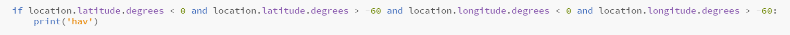
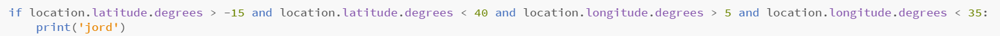
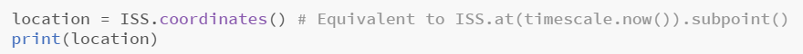
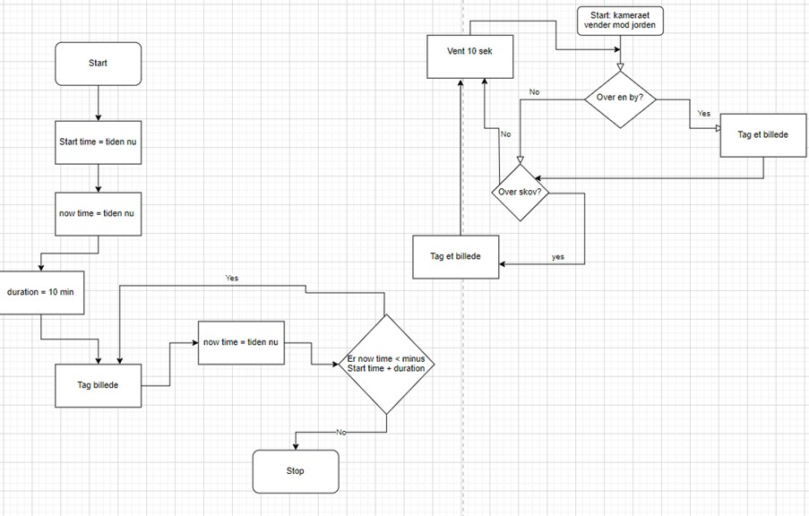

I vores projekt til ESAs Mission Space Lab's udfordring, ville vi gerne undersøge albedoen over hhv. havet og landjorden og herefter vurdere hvilken, der er højest. Dette er relevant i forhold til global opvarming, hvor verdenshavene forventes at stige, og en større del af jorden således dækkes af vand.
Da vi har arbejdet deduktivt, har vi desuden udarbejdet en hypotese, som lyder således:
Vi forventer, at vores målinger vil vise, at albedoen over havet er højere end over jorden, og at havet derfor reflekterer mere lys/energi/varme.
Da det ikke er muligt at måle albedoen direkte med en af ESA's sensorer, vil vi undersøge lysindfaldet på billeder over hhv. havet og jorden, taget med ESA's kamera, der peger mod jorden. Disse opservationer vil senere danne udgangspunkt for vores konklusion. For at billederne bliver taget over hhv. havet og landjorden, har vi specificeret koordinater for hhv. en del af det nordlige Afrika og en del af det Sydlige Atlanterhav. Vi har vurderet, at disse områder er så store, at sandsynligheden for at rumstationen ville passere henover var nogenlunde. Dog ville vi have udarbejdet en mere komplet oversigt over land- og havområder, hvis vi havde arbejdet videre med projektet, så vi ikke ville risikere at ende uden data, hvis rumstationen ikke kom over Nordafrika eller det Sydlige Atlanterhav.
Vi har specificeret vores koordinater, hvorfra vi ønsker billeder, vha. følgende to kodestumper:

og

desuden virker disse, fordi vi tidligere i koden har hentet rumstationens koordinater ned:

Vi har valgt at opdele vores flowchart i to dele, så det illusterer hhv. vores overordnede loop med tiden, hvor der "bare" tages et billede og vores loop, som viser processen, hvor der kun tages et billede, hvis sensoren er over hav eller landjord.
Da vi udarbejdede flowcharts'ne inden projektet var kodet færdig, skal "by" erstattes med landjord og "skov" med hav.
